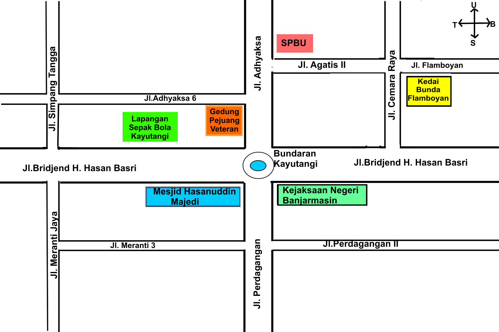

-
Tujuan Pembelajaran:
- Siswa dapat menentukan kedudukan garis sejajar terhadap garis sumbu pada bidang koordinat
- Siswa dapat menentukan kedudukan garis tegak lurus terhadap garis sumbu pada bidang koordinat
- Siswa dapat menentukan kedudukan garis berpotongan terhadap garis sumbu pada bidang koordinat
Setelah mempelajari bagaimana posisi garis sejajar terhadap sumbu koordinat, selanjutnya kita akan mempelajari posisi garis tegak lurus terhadap garis koordinat

Masalah 3.2 : Perhatikan gambar berikut ini!
Pada denah bundaran Kayutangi Kota Banjarmasin terdapat beberapa nama jalan. Jl.Bridjend H.Hasan Basri, Jl. Flamboyan, Jl.Perdagangan II, Jl. Meranti 3, Jl. Adhyaksa 6, Jl. Agatis II dan Jl.Flamboyan memanjang dari arah timur ke barat. Sedangkan Jl.Adhyaksa, Jl.Perdagangan, Jl. Simpang Tangga, Jl.Meranti jaya dan Jl. Cemara Raya memanjang dari arah utara ke selatan.

Jika Toni berjalan di sepanjang Jl. Bridjend H.Hasan Basry dan Rudi berjalan di sepanjang Jl.Cemara Raya. Apakah mereka mungkin bertemu?

Berdasarkan masalah 3.2 kita dapat menentukan :
- Jalan yang membentuk posisi tegak lurus antara satu dan lainnya,
- Toni dan Rudy akan saling bertemu atau tidak.

Coba perhatikan denah bundaran Kayutangi Kota Banjarmasin. Jika kita bawa ke bidang koordinat, jalan utama yaitu Jl.Bridjen H.Hasan Basri yang memanjang dari timur ke barat merupakan sumbu X. Jl.Adhyaksa dan Jl.Perdagangan yang memanjang dari utara ke selatan merupakan sumbu Y seperti gambar berikut ini.
untuk lebih jelasnya mari simak animasi berikut ini, klik tombol mulai untuk memulai animasi
- Klik tombol mulai pada animasi dibawah ini untuk memulai.
- Klik tombol
 untuk memperbesar layar.
untuk memperbesar layar. - Jawab pertanyaan dengan masukkan jawaban pada kolom yang tersedia kemudian tekan enter

Kerjakan latihan soal berikut ini!
-
Petunjuk:
- Tekan tombol 1,2,3,4,5 dibawah soal untuk mengganti ke nomor selanjutnya
- Tekan tombol "<" dan ">" disamping soal untuk mengganti nomor
Jawab pernyataan berikut dengan memilih jawaban Ya apabila pernyataan benar dan Tidak apabila pernyataan salah.